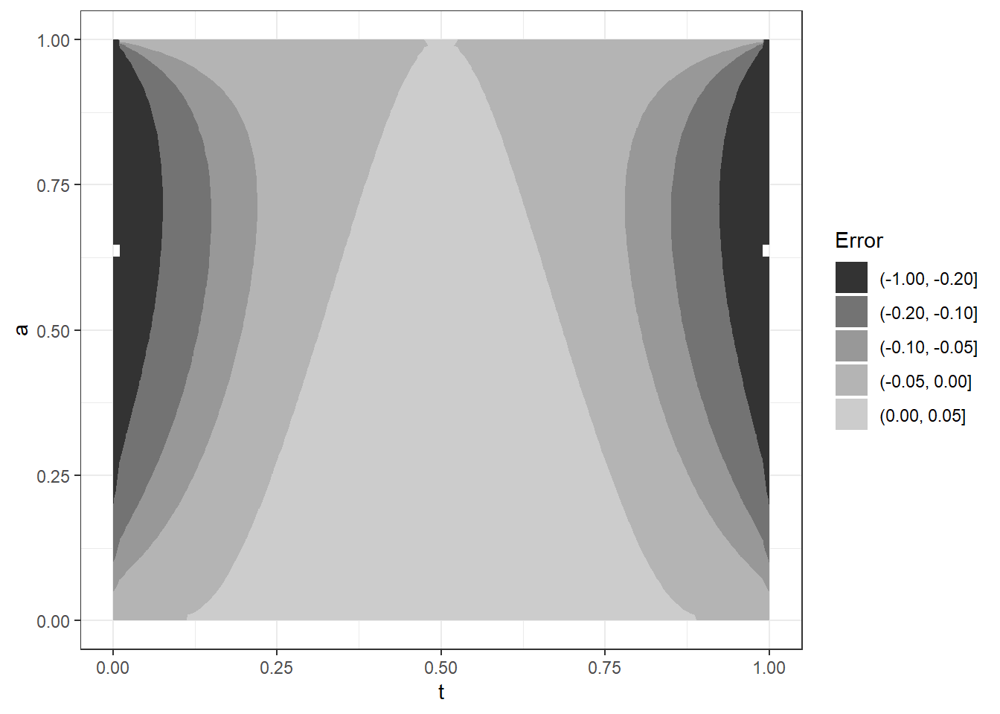
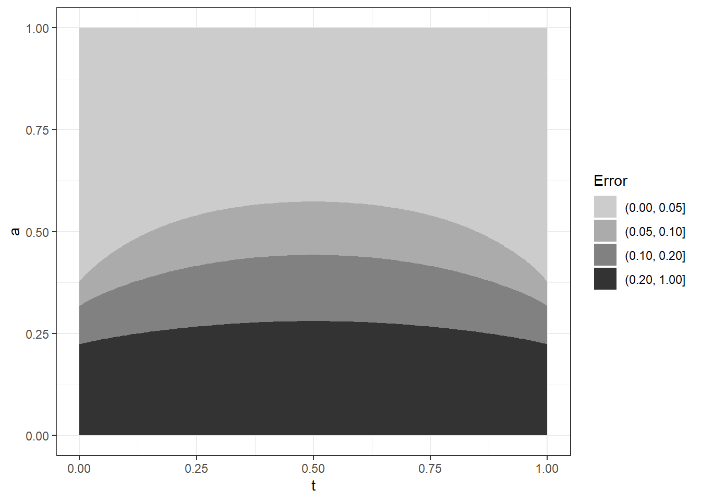
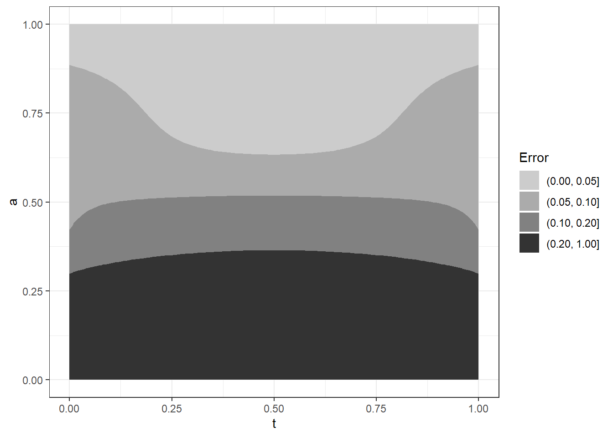
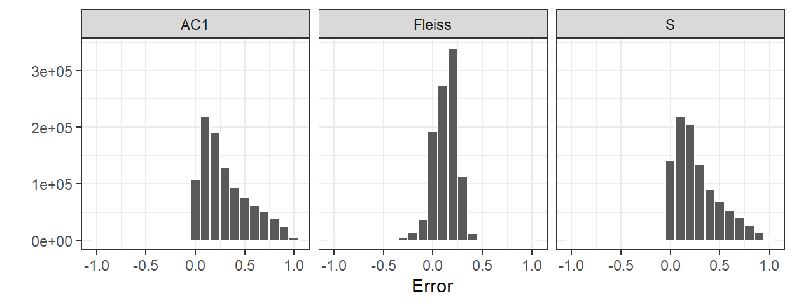

One way to make the model identifiable is to put a constraint on one of the parameters. For example, we can constrain the guessing parameter \(p\) to be equal to the truth parameter \(t\). This is the approach taken by the Fleiss kappa [@fleiss1971measuring], as we’ll see below.
The formula for chance-corrected measure of agreement (generically a “kappa”) compares observed match rates to the expectation of random match rates. The kappas vary in how they estimate the random match rates. For two ratings to match, two raters \(j,k\) of the same subject \(i\) must agree in their assignment of either Class 1 or Class 0 classifications. In other words, the binary random variables must agree: \(C_{ij} = C_{ik}\). A generic formula that includes the most common kappas is
\[
\kappa = \frac{m_o - m_c}{1 - m_c},
\] where \(m_o\) is the observed proportion of agreements and \(m_c\) is the expected proportion of agreements under chance. The most general treatment of such statistics is the Krippendorff alpha [@krippendorff2018content, pp. 221–250]
The various kappas differ in the assumption made about the chance correction probabiliy \(m_c\). Commonly, the assumption is that \(m_c = x^2 + \bar{x}^2\) for some probability \(x\). This simple formulation makes sense when both raters are guessing, but the actual case is more complicated because a match “by chance” could be a case where one rating was accurate and the other was a guess. This distinction isn’t generally made in the derivations of the kappas, although the AC1 paper discusses the issue, and hints at a full three-parameter model. It’s ironic that the confusion about kappas is disagreement about the probability of agreement by chance.
The Fleiss kappa assumes that \(p = c\), the observed fraction of class 1 ratings (\(\hat{c} = E[C]\)), so that \(m_c = c^2 + \bar{c}^2\). The \(S\) statistic (also called the \(G\)-index) is a kappa formulation that assumes \(m_c = 1/2\). The AC1 kappa has a different form, assuming that \(m_c = 2c\bar{c}\). The Cohen kappa is a variation where each rater gets a guessing distribution, so \(m_c = x_1x_2 + \bar{x_1}\bar{x_2}\).
Consider two raters classifying an observation. In the \(t-a-p\) model we can express the expected value of observed matches \(m_o\) as the sum of three kinds of agreement: (1) \(m_a\) is when both raters are accurate (and hence agree), (2) \(m_i\) when both raters are inaccurate (guessing) and agree, and (3) \(m_x\) is the mixed case when one rater is accurate and the other is inaccurate but they agree. The second two of these have expressions that include the guessing rate \(m_c\). Following that thinking we have the following expectations for rates:
For \(m_a\), both ratings must be accurate, in which case they automatically agree. For \(m_i\), both must be inaccurate (\(\bar{a}^2\)) and then match randomly (\(m_r\)). For \(m_x\), one rater must be accurate and the other inaccurate, in which case they agree if the accurate rater chooses the category that the inaccurate rater guesses.
Following the intuition in the introduction, that kappa is the square of what we are interested in, we can attempt to choose \(m_c\) so that \(\kappa = a^2\) via \(m_0 - m_c = a^2(1-m_c)\). This leads to
where the asterisk denotes the choice of the chance correction formula \(m_c\) that always makes \(\kappa = a^2\). In unsimplified form, the numerator of is the expected proportion of matches where there is at least one inaccurate rating, and the denominator is the the rate of non-perfect rating pairs, where at least one of the raters is inaccurate, and they may or may not match. The chance correction is therefore accounting for the accurate ratings by taking them out of the data altogether and then calculating inaccurate matches out of all rating pairs as the probability of by-chance matching.
The formulation of \(m_c^*\) isn’t directly helpful for computing a kappa because the whole point is to discover \(a\), so a formula for \(m_c\) that requires knowing \(a\) is circular. However, some special cases are of interest. For values of \(a\) close to zero, we have \(m_c^* \approx p^2 + \bar{p}^2\); when most ratings are random, the guessing parameter \(p\) is most important. When \(a\) is close to one, \(m_c^* \approx tp + \bar{t}\bar{p}\); when most ratings are accurate, the inaccurate matches are likely to have only one inaccurate rating.
If \(m_c^2\) is averaged over a uniform distribution \(p \epsilon [0,1]\), \(t\) also drops out so that the chance correction only depends on \(a\), the proportion of accurate ratings.
If when raters assign inaccurate ratings, if they at least conform to the distribution of true values, so that \(t = p\), then \(m_c^* = p^2 + \bar{p}^2\). Finally, if \(p = 1/2\) then \(m_c^*\) simplifies to \(1/2\) as well. These two conditions will be referred to respectively as “proficient” or “naive” raters, as described below.
2 The Fleiss Kappa: Proficient Raters
[Note: in the asymptotic likelihood app, it seems that in addition to t = p, when p = .5 we have an accurate estimate of a as well–No, that’s only if we use p = .5, not c = .5.]
The Fleiss kappa is designed to work over multiple raters and a rating scale of arbitrary length. It assumes an asymptotic form for chance correction, so is most appropriate for large samples. We only consider the binary scale case here. Extension to larger scales is a topic in the discussion section at the end of this essay.
The baseline for random ratings for Fleiss is if we took all the observations and randomly shuffled them between subjects. This worse case has accuracy equal to zero, and the rating process devolves to
This is a simple binomial distribution with probability \(p\) , not a mixture of them, and \(p = \hat{c}\) (the observed average fraction of Class 1 ratings) will have maximum likelihood over binomial models. In this case, we have no information about \(t\), and any value will do in the model, since it has no effect. The Fleiss kappa uses this random baseline and takes it one step further by assuming that the fraction of true Class 1 cases is the same as the reported fraction, as well, i.e. \(t = \hat{c}=p\). The Fleiss kappa can therefore give poor estimates for \(a\) when the raters get the proportion of Class 1 cases wrong.
For example, consider a test for a medical condition that has a prevalence of 10%, but the test is in fact returning random results that are half positive and half negative. Then the kappa’s baseline for comparison is wrong, and the resulting estimate for accuracy will be biased.
A review of the properties of Fleiss kappa can be found in , chapter 18, including kappa’s equivalence to an intraclass correlation coefficient, defined as ICC(1,1) in . In our notation here, the Fleiss kappa is defined as taking \(m_c = \hat{c}^2 + \hat{\bar{c}}^2\), where \(\hat{c}\) is the observed proportion of class 1 ratings. The Fleiss kappa is therefore a \(\hat{c}\)-\(a\)-\(\hat{c}\) model. The functional form \(f(x) = x + x^2\) for \(x \epsilon [0,1]\) is parabolic, with a minimum at \(x = 1/2\), where \(f(x) = 1/2\) and maxima at \(x = 0\) and \(x = 1\), when \(f(x) = 1\). Therefore, the chance correction term \(m_c\) of the Fleiss kappa is opinionated, favoring larger rates of rater error. We would expect that the rater agreement statistic will tend to underestimate rater accuracy, taken to be \(\hat{a} = \sqrt{\kappa}\).
As noted, the chance correction for Fleiss depends on the observed proportion of Class 1 ratings, \(\hat{c}\). The expected value under the tap model assumptions is \(E[\hat{c}] = c = ta + p\bar{a}\); ratings of Class 1 result from either true and accurate ratings or from inaccurate ones that happen to guess Class 1.
When \(p = t\), the expectation of ratings simplifies to \(c = pa + p\bar{a} = p\). Intuitively, this case causes rater accuracy \(a\) to wash out of the observed rate of Class 1 ratings \(\hat{c}\), so that the chance correction can be estimated directly. In the discussion of Equation 1, we saw that when \(t = p\), \(m_c^* = p^2 + \bar{p}^2\). Therefore, the Fleiss kappa is equivalent to the chance correction that makes \(E[\kappa] = a^2\) when \(t = p\). Under this assumption, when raters make inaccurate ratings, their ratings at least conform to the distribution of true values \(t\), and more generally the fraction \(c\) of Class 1 ratings is the true fraction. I’ll refer to that case “proficient” raters, since on average their work represents the true distribution of the data, which in the notation here is \(t = c\).
Under this \(t = c\) “proficiency” condition, rater accuracy \(a\) is the correlation between the raters’ ratings and the true classifications, \(\sqrt{E[\kappa]} = a = cor(C, T)\). Additionally, the Fleiss kappa is the intraclass correlation of the ratings. Derivations of these results are found in the appendices, where there is also an alternative derivation of the \(a = \sqrt{E[\kappa}]\) result.
Even when \(t \ne p\), when \(a = 1\), \(\kappa = 1\), and when \(a = 0\), \(\kappa = 0\) or is undefined.
In calculations over a grid of possible values for the input parameters in \((0,1)\) for each, the Fleiss kappa was rounded up to zero for negative values. When \(t \ne p\), the bias away from \(a^2\) was often substantial (the R code to reproduce these results are in the supplementary materials).
Code
df <-kappa_error(1e6)df |>group_by(t, a) |>summarize(error =mean(fleiss_a - a)) |>ggplot(aes(x = t, y = a, z = error)) +geom_contour_filled(breaks =c(-1,-.2, -.1, -.05, 0,.05)) +scale_fill_grey(start = .2, end = .8) +theme_bw() +guides(fill=guide_legend(title="Error"))

Figure 1: The Fleiss kappa’s error in the estimate of rater accuracy averaging over expression(p epsilon [0,1]), taken over a dense grid of values in [0,1] for the parameters.
The average of the Fleiss kappa’s estimate of \(a\), shown in Figure 1, is pretty good when \(t\) is somewhere near .5, across the whole range of true \(a\) values. Problems occur for large and small values of \(t\). This result doesn’t hold for all values of \(p\), just the average. So if we have a large number of raters and imagine that their individual statistics \(p_j\) are randomly distributed, there’s some assurance that for reasonable values of \(t\), then \(| \sqrt{\kappa_{fleiss}} - a | \le .05.\) Recall that under the proficient rater assumption (\(p = t\)), the expectation of this kappa is \(a^2\).
As a soft version of the proficient rater assumption, we can assume that the prior distribution of \(p\) is not uniform over \([0,1]\), but is represented by a beta distribution \(\beta(c_1, c_0)\).
[Note: see “decomposing a.rmd” for possible results connecting proficient raters to the decomposed accuracy models]
[closed form for a exists under Fleiss assumptions, and we have t = p, so there’s a closed form for the likelihood given a data set]
3 S (G-index): Naive Raters
Recall that the S (G-index) version of kappa assumes that raters “flip coins” when assigning an inaccurate rating, with chance correction \(m_c = 1/2\). As noted in the discussion of Equation 1, the choice of \(p = 1/2\) corresponds to this choice. Thus, S is a \(t-a-1/2\) model. The \(S\) statistic will recover \(a\) when \(t = 1/2\), subject to sampling error, but generally this is not the case. A grid expansion of n uniformly distributed values of the three model parameters \((t, a, p)\) was used to calculate the estimation error of rater accuracy, using \(a = \sqrt{\kappa}\).
Code
df |>group_by(t, a) |>summarize(error =mean(S_a - a)) |>ggplot(aes(x = t, y = a, z = error)) +geom_contour_filled(breaks =c(0,.05, .1, .2, 1)) +scale_fill_grey(start = .8, end = .2) +theme_bw() +guides(fill=guide_legend(title="Error"))

Figure 2: The S statistic’s error in the estimate of rater accuracy averaging over expression(p epsilon [0,1]), taken over a dense grid of values in [0,1] for the parameters.
For small values of \(a\), the S statistic’s constant \(m_c = 1/2\) underestimates \(m_c^*\) and hence inflates kappa. The contours in ?@fig-s-error show that, when averaging over \(p\), the S version of kappa badly overestimates \(\hat{a}\) for small values of \(a\).When \(a = 1\), \(S = 1\), and when \(a = 0\), S can take any value in [0,1]. For example, when \((t,a,p) = (0,0,1/2)\), the S is 0, but when \((t,a,p) = (1/2,0,1)\), S is 1.
[is this model unique in t-a-p like Fleiss is?]
4 AC1
The AC1 version of kappa developed in uses the same disaggregation of rating agreements found in . This can be found in Table 4, page 36, where Gwet uses the idea of ratings that are certain (the same as ??’s “for cause”) versus random, so that what I’ve called the accurate match rate \(m_a = a^2\) is the sum of Gwet’s counts of accurate matches \(N_{++.CC} + N_{--.CC}\) divided by the total number of rating pairs. In terms of the t-a-p model, Gwet assumes that the probability of a by-chance agreement is \(m_c = m_i + m_x\), the sum of the cases where both raters make inaccurate ratings and the case where exactly one does. This amounts to assuming \(a^2\) is close to zero in \(m_c^* = (m_i + mx)/(1-a^2)\). After some approximations, the accidental match rate \(m_i + mx\) is assumed to be \(2c\bar{c}\), estimating \(c\) from \(\hat{c}\), the observed fraction of \(C = 1\). Since \(1 = (c + \bar{c})^2 = c^2 + 2c\bar{c} + \bar{c}^2\), the AC1 version of \(m_c\) is the complement of the Fleiss version: they sum to one. In effect, matches that Fleiss considers random, AC1 considers non-random, and vice-versa, at least in expectation. One consequence is that \(AC1 \ge \kappa_{fleiss}\).
which will overestimate \(a\), moreso when \(c \approx .5\).
As noted in the discussion of the Fleiss kappa, when \(a\) is small, the Fleiss chance correction of \(c^2 + \bar{c}^2\) is a good approximation of \(m_i + m_x\), which means that the AC1 complement of this, \(1 - (c^2 + \bar{c}^2)\), gives a poor estimate for small values of \(a\). Neither version is a good approximation when \(a\) is close to one.
Code
df |>group_by(t, a) |>summarize(error =mean(AC1_a - a)) |>ggplot(aes(x = t, y = a, z = error)) +geom_contour_filled(breaks =c(0,.05, .1, .2, 1)) +scale_fill_grey(start = .8, end = .2) +theme_bw() +guides(fill=guide_legend(title="Error"))

Figure 3: The AC1 statistic’s error in the estimate of rater accuracy averaged over a dense grid of values in (0,1) for \((t,a,p)\).
The contours in ?@fig-ac1-error shows the median error (solid line), the 25th and 75th percentiles (lighter ribbons), and maximum error (lighter ribbons) for S as a function of rater accuracy. The S version of kappa tends to overestimate rater accuracy when \(a<.5\). For example, if \(t = p = .8\) with \(a = .25\), the AC1 has an expectation of .58, implying an accuracy of .76.
[is this model unique in t-a-p like Fleiss is?]
5 Cohen’s Kappa
The original kappa is a variation that exceeds the three-parameter \(t\)-\(a\)-\(p\) model, because each rater gets a custom guessing rate. With two raters, the model becomes \(t\)-\(a\)-\(p_1,p_2\), and the chance match rate is \(m_c = p_1 p_2 + \bar{p_1}\bar{p_2}\). The kappa is still calculated by comparing the observed match rate \(m_o\) and the estimated chance correction, with \(\kappa = (m_o - m_c)/(1-m_c)\).
In cases where \(p_1 = p_2 = t\), the Cohen kappa is equivalent to the Fleiss kappa with the proficient rater condition, and \(\sqrt{E[\kappa]} = a\).
6 Krippendorff’s Alpha
On the wiki page, it notes that the metric used is a square of an actual metric, which probably relates to the a^2 thing.
There’s a note about the bias in Fleiss. I think the alpha is the small-n version of fleiss with varying numbers of raters. I should code it up.
7 Conclusions about kappa
Code
p1 <- df |>select(t,a,p, Fleiss = fleiss_a, S = S_a, AC1 = AC1_a) |>gather(key ="kappa", value ="value", -t, -a, -p) |>mutate(Error =sqrt(value) - a) |>select(kappa, Error)p1 |>ggplot(aes(x = Error)) +geom_histogram(binwidth = .1, color ="white") +scale_fill_grey() +theme_bw() +facet_wrap(~kappa, nrow =1) +ylab("")

Figure 4: Expected error histograms in estimating rater accuracy, taken over a dense grid of values in [0,1] for the t-a-p parameters$.
The histograms in Figure 4 show the expected error in estimating rater accuracy for selected kappa statistics identified above. In actual use, sampling error will be added to this. The Fleiss kappa has the least error overall. AC1 and S tend to overestimate \(a\), and The bias with the Fliess, S, and Cohen kappas come from their assumption that \(D=0\) in , which derives from the assumption that the raters are either proficient (Fleiss) or naive (S). Cohen has the additional assumption about individual rater guessing parameters. If those conditions don’t hold in the data (i.e. if the model fit is poor), then rater accuracy will estimated with error depending on how large \(D\) actually is. For example, if \(t = 0.2\), \(a = 0.2\), and \(p=0\) (no one ever guesses \(\widehat{C_1}\)), then neither of the kappa assumptions \(p = 1/2\) (S) or \(t = p\) (Fleiss) are close to true and \(D = 0.2\) instead of zero. The S estimate of \(a\) is .99 and the Fleiss estimate is .13.
Although the two kappas surveyed can recover rater accuracy when the assumptions are met, they are not robust to large violations of those assumptions. The parameterized rater model presented here is a more general modeling approach to estimating rater accuracy and other parameters of interest.
Under the assumptions of the t-a-p model, each of the kappa statistics considered in this section add assumptions. For example, Fleiss adds the assumption \(p = t\). This has the effect of reducing the size of the parameter space. For a given data set, it’s then possible to assess the likelihood of each of the kappa choices by maximizing over the respective restricted parameter space. This can reveal which of the assumptions has maximum likelihood, if the desire is to choose between models. However, it’s probably better to not introduce such restrictions unless there’s a good reason to do so.